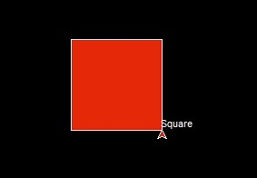

Welcome back to the Emerging Trends: Python series written and produced by Arran Woodruff! As usual, thanks for coming back again. As usual I've got some really cool stuff to show you. Today we're going to look at a simple image filter for gifs. By the end of this post we're going to have everything in place to convert an existing .gif image in a black and white version of itself using pixel rgb averaging for our filter.
Addtionally, we'll be able to write this greyscale image to file in an interesting format where we print out the sequential greyscale pixel values as well as some basic metadata in order to reconstruct the image again. In the next section we'll go over a brief introduction to the required python modules for this application.
The first module, which we're already familiar with, is Turtle. Turtle is a graphics library that allows you to
control a 'Turtle'. This turtle leaves behind a line which can be used to draw simple shapes and has the ability
to fill these shapes also. This module is primarily used to draw rudimentary shapes such as circles, squares,
and stars but we're going to take it a few steps further to draw a high resolution image.
Here's a quick refresher of drawing a square:
square.forward(100)
square.left(90)
square.forward(100)
square.left(90)
square.write("Square")
Program Output:

Tkinter is a module that provided some essential methods for gathering image data. It made what could be
potentially very complex code into a few simple method calls. In order to read image data programatically you'd
likely have to read the binary data, do conversions to data you can work with, and then reverse engineer the
image encoding algorithm in order to get simple pixel data. Tkinter exposes some great methos such as
img.get(x, y) this method returns a tuple which contains the three RGB
components of the pixel.
Not everyone likes so much color in life, sometimes pictures are too much and cause sensory overlaod in more sensitive people. Our goal is to remove all that pesky color and life from the image until all we're left with is a plain boring easy-to-look at greyscale picture.
Our solution comes in two parts, an encoder which reads each pixel from our original picture and converts each one to a greyscale value and writes it to a file.
for i in range(height):
for j in range(width):
### 2. get pixel ###
pixel = img.get(j, i)
### 3. convert to greyscale ###
bw_pixel = int((pixel[0] + pixel[1] + pixel[2]) / 3)
### 4. write the pixel ###
file.write(str(bw_pixel) + "\n")
This code will result in a file being created with all of the greyscale pixel data being written to a file as
seen before.
The next task is to read this pixel data and draw it on the screen, this is accomplished with the following
code:
while(currentLine != "END"):
### 4. read line and get pixel data ###
greyscalePixel = int(currentLine)
turtle.color((greyscalePixel, greyscalePixel, greyscalePixel))
### 5. draw the pixel ###
turtle.forward(1)
lineCounter += 1
### 6. check if we're off the screen and reset the cursor if we are (typewriter style)
###
if (lineCounter >= width):
turtle.up()
turtle.right(90)
turtle.forward(1)
turtle.right(90)
turtle.forward(width)
turtle.right(180)
turtle.down()
lineCounter = 0
### 7. read the next line ###
currentLine = input()
Combining these two sections together we are able to, pixel by pixel, recreate the original image in full greyscale by using pixel averaging.
The main idea behing this example is showing how easy it can be to get up and running with potentially very
complex problems and implement quick solutions. Python is amazing because it allows you to focus on the problem
solving aspect of programming and doesn't force you to spend time learning and implementing a ton of type safety
and structure like many other languages. Often times you can simply import a libary to interpret a strange data
format and work with it very quickly and easily.
Thanks so much for spending the time reading my blog posts and I hope you picked up something useful!
ps: Thanks so much for the instruction Khosro, you were by far one of my favourite teachers at SAIT and I hope
you and your family stay healthy and safe.